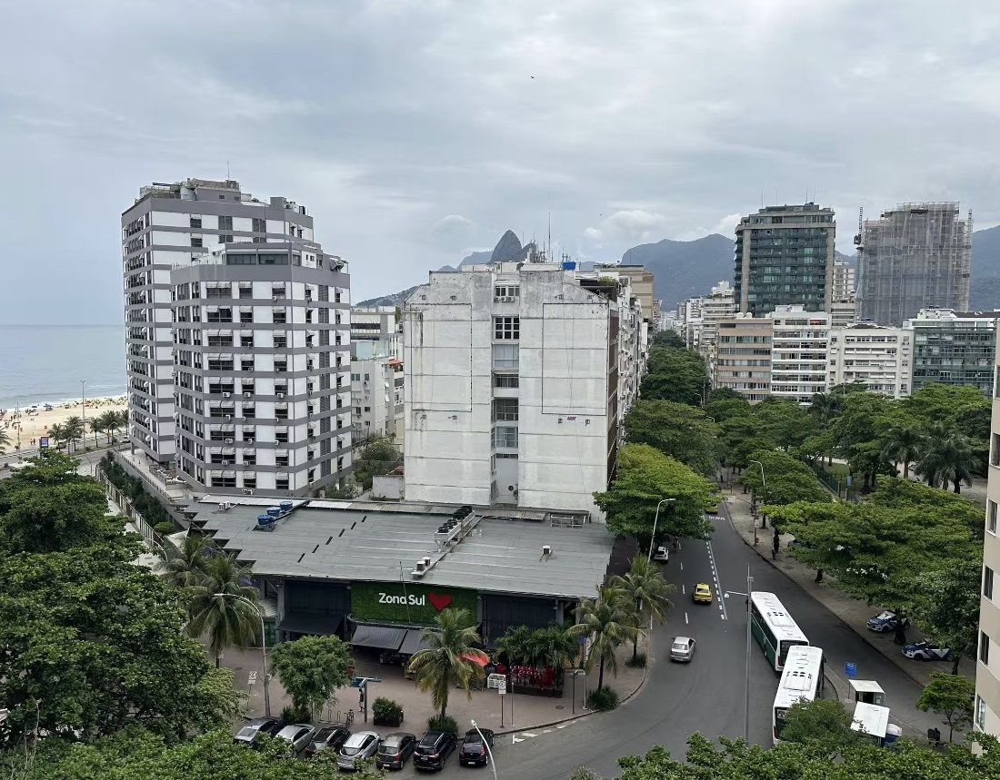
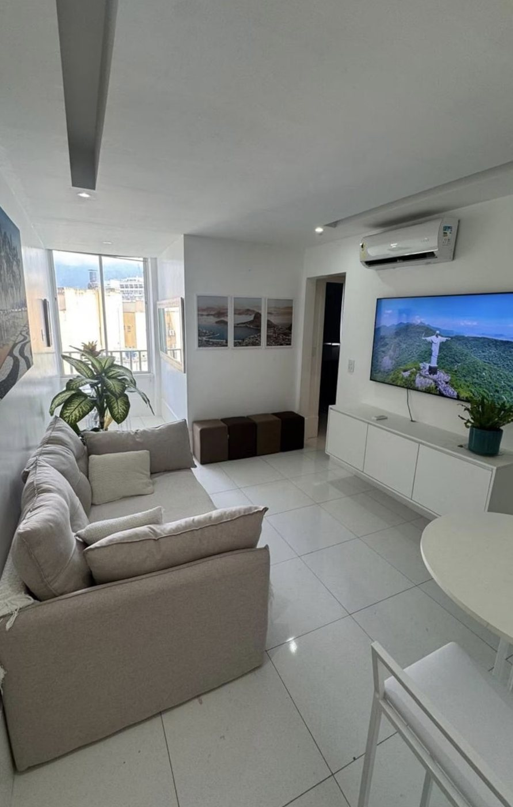
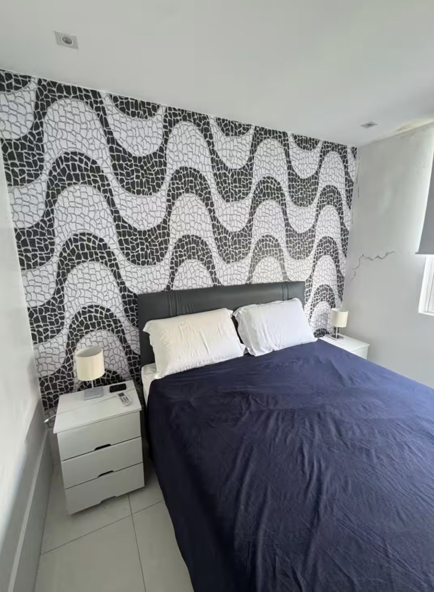
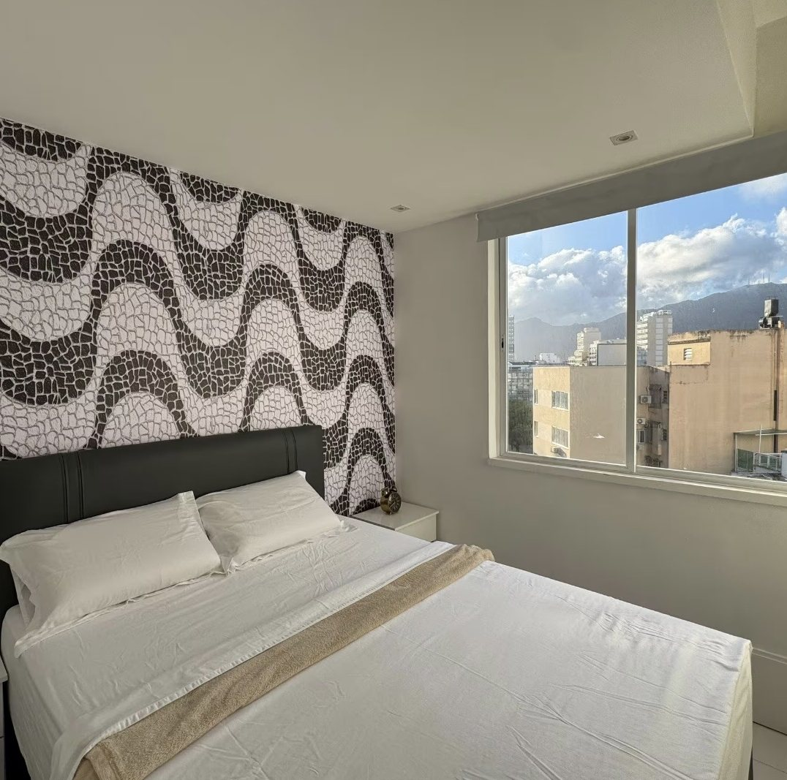
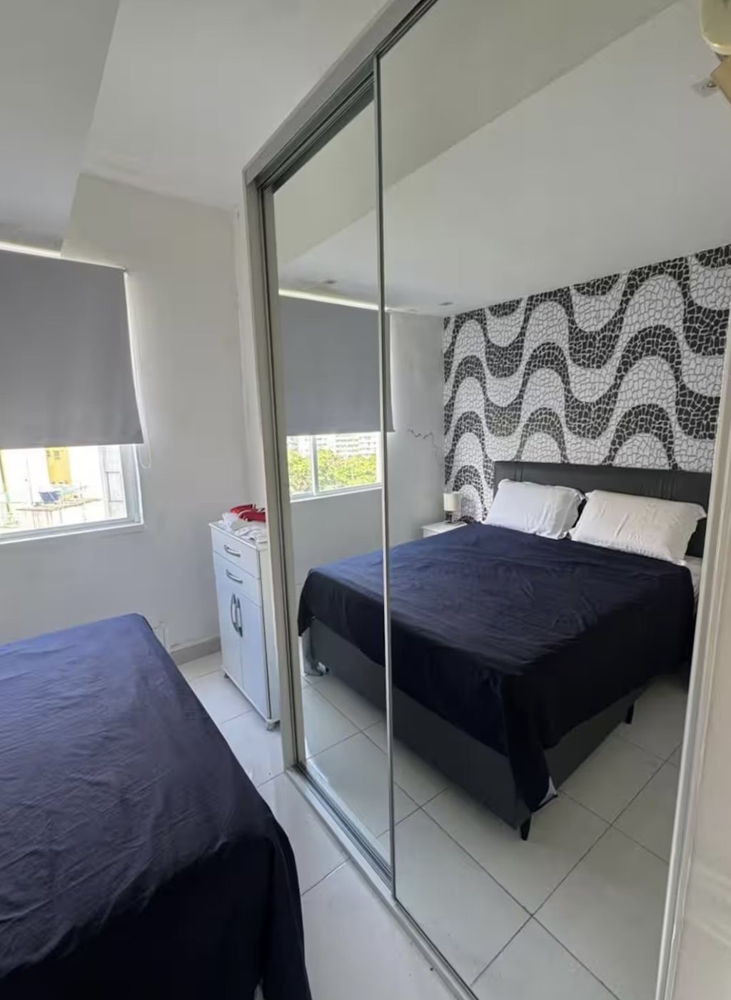
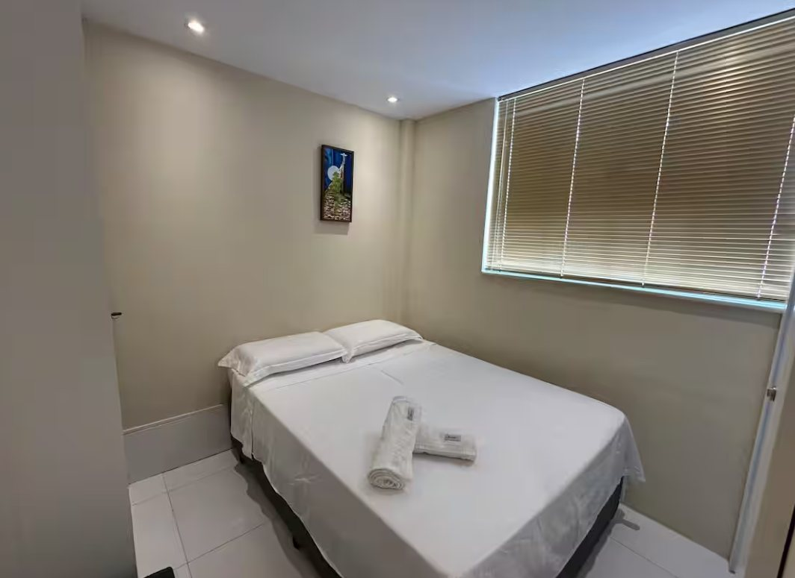
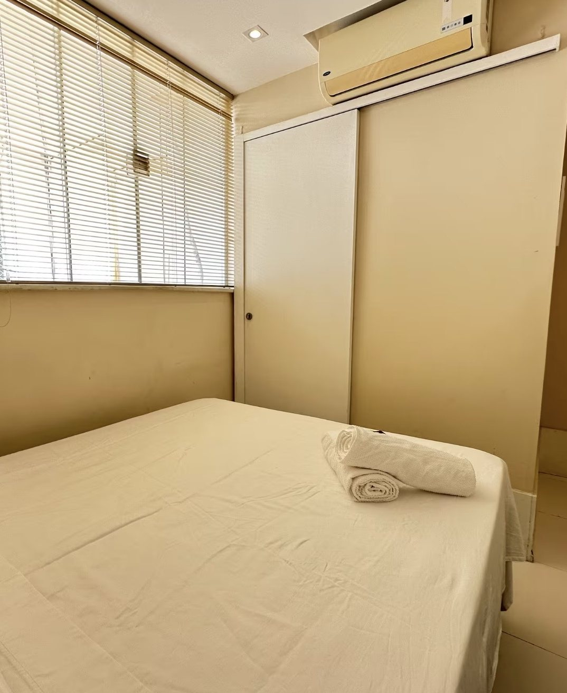
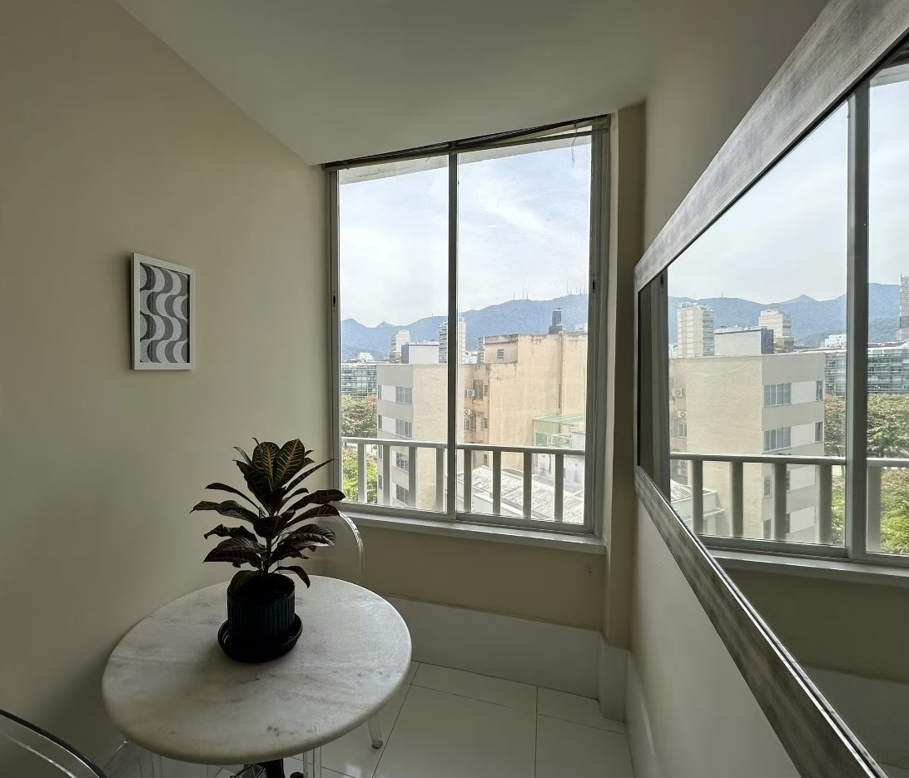
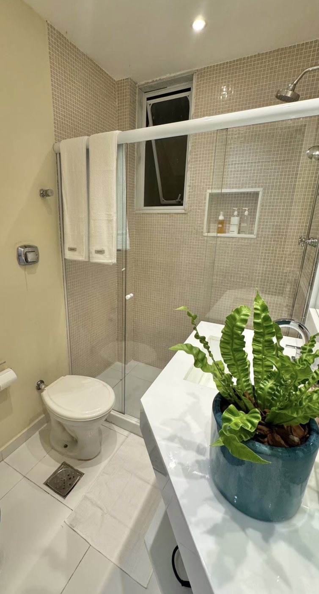

PROPUESTA DE ALOJAMIENTO

Apartamento de 2 dormitorios
en Arpoador
Piso alto, luminoso y renovado, con vista al mar y al Morro Dois Irmãos. A pasos de la playa, entre Ipanema y Copacabana: la esquina más linda de Río para ver el atardecer.
27/11 → 01/12fechas
4noches
4personas
2dormitorios
VALOR TOTAL DE LA ESTADÍAR$ 4.200
4 noches, del 27/11 al 01/12, para hasta 4 personas · ropa de cama y toallas incluidas
Fotos













El apartamento
- Dormitorio 1: cama de matrimonio, placard con espejo y vista a la montaña
- Dormitorio 2: cama de matrimonio, placard y aire acondicionado
- Living con sofá, Smart TV grande y aire acondicionado
- Rincón luminoso con mesa para desayunar o trabajar, con vista
- Cocina equipada: heladera, cocina a gas con horno, microondas, cafetera y utensilios
- Baño completo con box de vidrio
- Ropa de cama y toallas incluidas
Ubicación
- Arpoador: entre Ipanema y Copacabana, a pasos de la playa
- La Pedra do Arpoador y su famoso atardecer, a pocos minutos caminando
- Supermercado, restaurantes, bares y farmacias alrededor
- Zona con movimiento y muy buena para moverse a pie o en metro
Reserva
Cómo reservar: se confirma con el 50% del total, por Pix o tarjeta. El resto, antes del check-in.
Fechas: entrada el 27/11/2026 y salida el 01/12/2026 (4 noches).
Disponibilidad: el apartamento queda reservado recién con el pago de la seña, así que recomendamos confirmar cuanto antes.
Reservar por WhatsApp
Fechas: entrada el 27/11/2026 y salida el 01/12/2026 (4 noches).
Disponibilidad: el apartamento queda reservado recién con el pago de la seña, así que recomendamos confirmar cuanto antes.